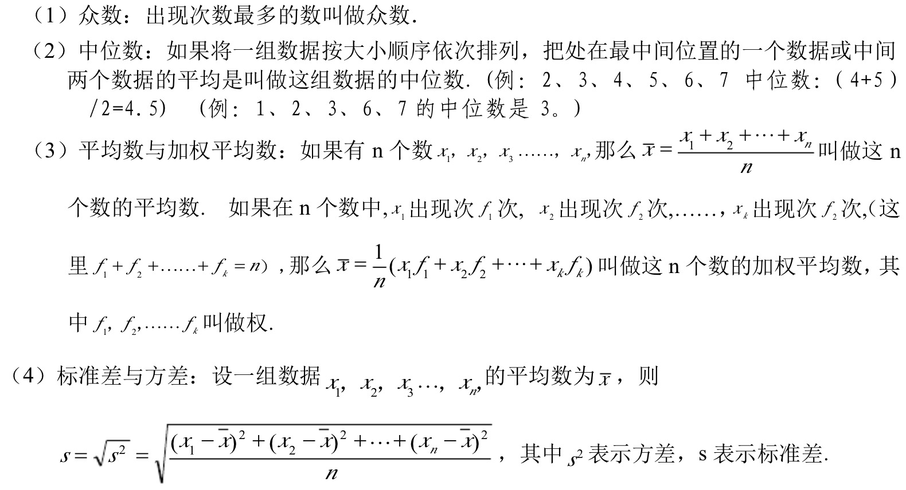
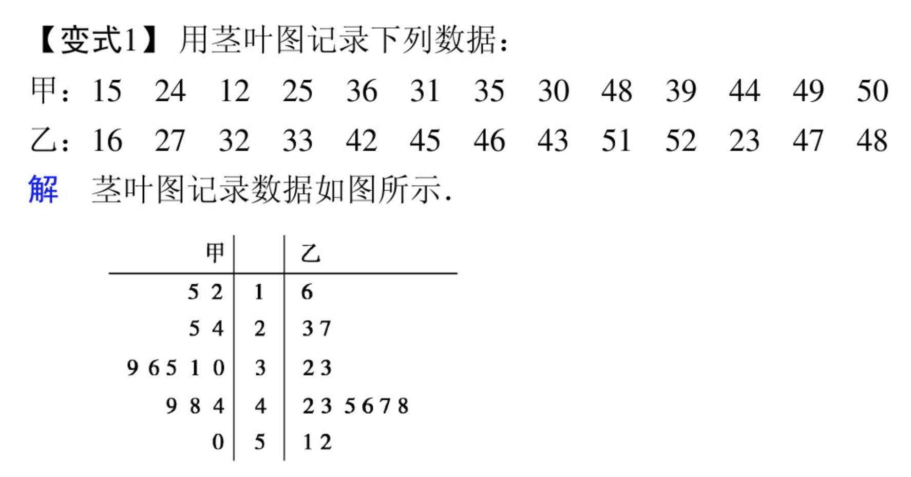

课程简介：
这门课是统计学入门课程，将涵盖统计学所有的主要知识，包括：随机变量、均值方差标准差、统计图表、概率密度、二项分布、泊松分布、正态分布、大数定律、中心极限定理、样本和抽样分布、参数估计、置信区间、伯努利分布、假设检验和p值、方差分析、回归分析等内容。课程地址：
外链：网易公开课
1. 课程内容
[第1集] 均值 中位数 众数
均值也就是算术平均值，即数据集中所有数据之和除以数据个数。
中位数是数据集排序后，处在中间的数。
众数是数据集中出现次数最多的数。
补充：加权平均数

[第2集] 极差 中程数
极差是数据集中最大数减去最小数的统计量。
中程数是最大数和最小数的均值。
[第3集] 象形统计图
象形统计图是用象形图像表示统计数据的图像，这一节讲象形统计图及例子。
[第4集] 条形图
条形图又称柱形图，是一种重要的分类汇总工具，这一节讲条形图及例子。
[第5集] 线形图
线形图，是将数据点描出来，然后连线形成的图像。用来表示趋势，这一节讲线形图及例子。
[第6集] 饼图
饼图，看起来像一块切开的饼，用于表示占比。这一节讲饼图及例子。
[第7集] 误导人的线形图
当线形图画成什么样子时会产生误导了，这一讲将讲到这一问题。
[第8集] 茎叶图
茎叶图是将数组中的数按位数进行比较，分别做出茎和叶，以此统计数据。这一讲讲茎叶图及例子。

[第9集] 箱线图
盒须图是用四个四分位点分开数据集的图，能有效给出数据散布状况。这一讲讲盒须图及例子。
[第10集] 箱线图2
这一讲讲盒须图的另外一个例子，强化盒须图这一重要统计图表的概念。
[第11集] 统计：集中趋势
集中趋势在统计学中是指一组数据向某一中心值靠拢的程度，它反映了一组数据中心点的位置所在。
[第12集] 统计：样本和总体
研究中实际观测或调查的一部分个体称为样本，研究对象的全部称为总体。这一讲区分了这两个概念，并给出了样本均值和总体均值的求法。
[第13集] 统计：总体方差
方差用来表述数据和均值之间的偏离程度，总体方差的计算公式是σ2=Σ(Xi-μ)2/N，其中求和的i从1到N。
[第14集] 统计：样本方差
方差用来表述数据和均值之间的偏离程度，样本方差不同于总体方差，计算公式为S2=Σ(Xi-X̄)2/(n-1)，其中求和的i从1到n，这里方差用的是n-1而不是n。
[第15集] 统计：标准差
标准差σ是表述数据和均值之间的偏离程度的另一个重要标志。它等于方差的平方根。
2. 理解与python示例
概念
0，1，2，3，4，5，6
mean：平均数
median：中位数
mode：众数
range：极差
midrange：中程数
populiation：总体
sample：样本
示例
c = array([[[0,1,2],
[10, 12, 13]],
[[100,101,102],
[110,112,113]]])
print c[1,...]
print c[1:3]
print c[1]
print c[1,:,:]
\[f(x) = \sum_{i=0}^{N}\int_{a}^{b} g(t,i) \text{ d}t{6}\tag{1}\]